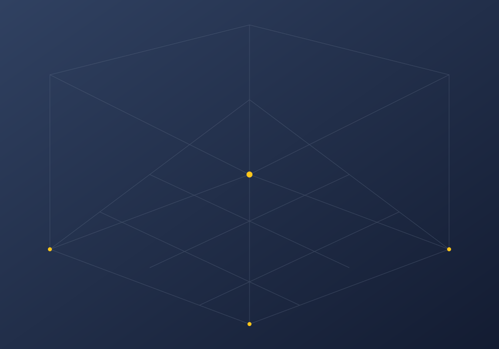

CAPTURED SPACES. SHARED EXPERIENCES.
Step inside.
Look around.
A growing collection of places you can explore from anywhere. Open a walkthrough, find your angle, and make yourself at home.
Explore the library Browser ready · No app to install

A NEW PERSPECTIVE
LATEST WALKTHROUGHYour next space starts hereInteractive 3D capture
—Walkthroughs available
—Photos reconstructed
—Latest capture
Loading the library…
THE COLLECTION
Available walkthroughs0
Choose a space. Start exploring.
No spaces found
Try a different search or filter.
Preview means the viewer is available for review. A reviewed walkthrough has been checked before sharing.
FROM REAL SPACE TO SHARED SPACE
A scan becomes
a place to explore.
Photos become a 3D scene, then a lightweight page you can open and share. New published scans appear in this collection.
What is a bounded pass?- 01
Capture the space
Walk through the room and upload the finished scan to Drive.
- 02
Build the walkthrough
Reconstruct the cameras, train the scene, and check the result.
- 03
Publish and explore
The branded viewer joins the library with its own shareable link.